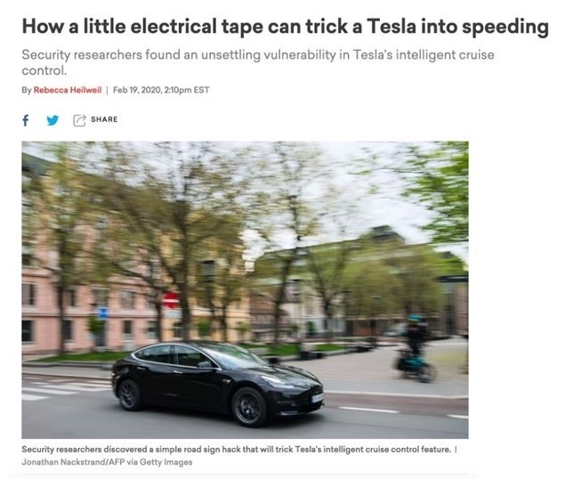
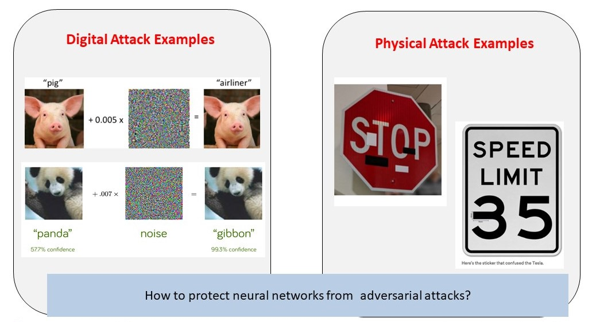

This research project addresses the design and analysis of robust and adaptive machine learning based on how children learn.

Learning systems are vulnerable to adversarial inputs that are malicious (e.g., image tampering) and non-malicious (e.g., dynamic environments).
These adversarial inputs can affect the learning systems at design-time (i.e., in the training data) and runtime (i.e., in the test data).
We will provide predictive analytics to address all the fundamental adversarial learning challenges.
-
Thrust 1: Concept-based Learning Robust to Adversarial Examples (Lead: Bastani)
- Task I.1: Robust learning of visual object and scene representations (Daniilidis, Eaton, Bastani, Parish- Morris)
- Task I.2: Concept-based deep learning with inductive biases (Roth, Bastani, Daniilidis, Parish- Morris)
- Task I.3: Compositional inference and reasoning for adversarial learning (Weimer, Lee, Parish- Morris)
- Connection with child learning: concept selection and representation
-
Thrust II: Adaptive Learning in Dynamic Environments (Lead: Eaton)
- Task II.1: Leveraging Inductive Biases for Adaptive Concept Learning (Bastani, Roth, Parish- Morris)
- Task II.2: Lifelong Learning (Eaton, Daniilidis, Parish-Morris)
- Connection with child learning: hierarchical and continual learning in new settings
-
Thrust III: Verification and Monitoring of Learning (Lead: Weimer)
- Task III.1: Verified learning (Weimer, Lee, Parish-Morris)
- Task III.2: Monitoring learning (Weimer, Lee, Parish-Morris)
- Connection with child learning: trust building, validation by probing, self-adversarial for robustness
-
Thrust IV: Integration and Evaluation (Lead: Lee)
- Toolset and dataset development
- Evaluation platform and scenarios